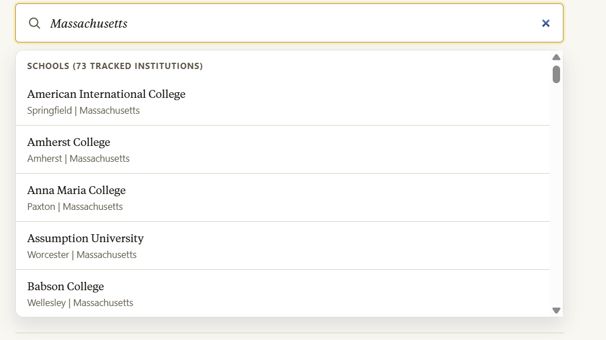

Blue means a trend is moving in a positive direction.
College Financial Health Explorer
Search for a college or university below to see how its finances and enrollment have changed over time.
A guide to using this tool
Use this explorer to look at the big picture.
- Once you search for a university and click on it, you'll see its financial profile.
- Scroll down to learn about different financial and enrollment indicators.
- The colored boxes can help you spot patterns.
- Red with a warning sign means a trend is growing in a concerning direction.
- One or two red boxes do not automatically mean a school is in crisis.
- But if a college shows several red indicators across revenue, enrollment and losses, that may be a sign of deeper financial pressure.
- Look out for the Pattern of declining enrollment and losses indicator at the top of a profile. That means the college posted declines of at least 5% in enrollment and net tuition revenue per student over the previous 5 years, along with operating losses in at least 3 of the last 5 years.
- A gold Widespread warning signs badge means at least 75% of the visible warning indicators on that profile are flagged as concerning.
Click on the tabs at the top of the page to learn about colleges that have:
- announced cuts to programs or staff,
- faced sanction from accreditors,
- or had federal research dollars terminated since 2025.
More questions about using this tool? Check our guide below.
How to search
Search by college name, nickname, state or its unique Integrated Postsecondary Education Data System ID.
For example: If you type in Massachusetts, you'll see all the colleges included in our explorer in that state.
You can also search by nicknames like CalTech, MIT or Georgia Tech.

What the colors mean
Red means a trend moved in a more concerning direction.
Yellow means the change was flat or minor.
For detail on how we define a concerning or positive change, head to our methodology.
Here are some example financial profiles:
Pattern of declining enrollment and losses
Widespread warning signs
Example University
Revenue decreased 19% from 2019 to 2024, after adjusting for inflation.
Enrollment decreased 17% from 2019 to 2024.
Net tuition revenue per full-time equivalent student decreased 23% from 2019 to 2024, after adjusting for inflation.
The institution's endowment increased 7% from 2019 to 2024, after adjusting for inflation.
How many times has this institution ended the year with a loss in the past decade?
8
Did this institution see a decline in enrollment in 3 of the previous 5 years?
Yes
This example school profile has a mix of red and blue boxes at the same time.
Revenue and enrollment are dropping significantly, and it has ended 8 of the past 10 years at a loss.
This suggests deeper financial pressure.
Example State College
Revenue increased 8% from 2019 to 2024, after adjusting for inflation.
Enrollment increased 1% from 2019 to 2024.
Net tuition revenue per full-time equivalent student decreased 12% from 2019 to 2024, after adjusting for inflation.
Total staff headcount increased 3% from 2019 to 2024.
Did this college end the latest year at a loss?
No
How much has state aid changed over the past 5 years?
+25%
This example college profile has one red box but mostly blue and yellow ones.
That suggests the college has a stable, or mixed, financial picture.
Where to look next
Graduation rate, bachelor's degree within 6 years
No data
Median earnings, 10 years after entry
No data
Median federal loan debt for graduates
No data
Revenue Trends
Revenue trends are a key indicator of whether a college is bringing in enough money to cover expenses. Examples of revenue include tuition, room and board, government aid, donations and endowment returns.
A college that spends more than it brings in is operating at a loss. Repeated losses can be a warning sign.
Has this college been in the red in 3 of the last 5 years?
How many times has this institution ended the year with a loss in the past decade?
Net tuition revenue
Net tuition revenue shows how much money a college brings in per full-time equivalent student after institutional aid and other kinds of discounts.
When net tuition revenue falls, it can put pressure on college finances. But it can also mean a college is giving students more aid and lowering what they pay.
Higher dependence on tuition can make a college more financially vulnerable when enrollment drops.
Enrollment
Drops in enrollment over time can be an early warning sign of financial stress.
Did this institution see a decline in enrollment in 3 of the previous 5 years?
Congress has capped federal loans for new graduate students starting July 1, 2026. This change could hit colleges with higher rates of graduate students who borrow.
International students
Institutions with higher rates of international students may be more vulnerable to the federal push to make it harder to obtain student visas.
Staffing
Drops in staffing can signal that a college is cutting back as a result of financial and enrollment challenges.
Endowment
Some colleges may have an endowment they can draw on for difficult financial periods.
Some universities report how much of the endowment they spend each year to help cover expenses.
Illustration by Elena Lacey for The Hechinger Report